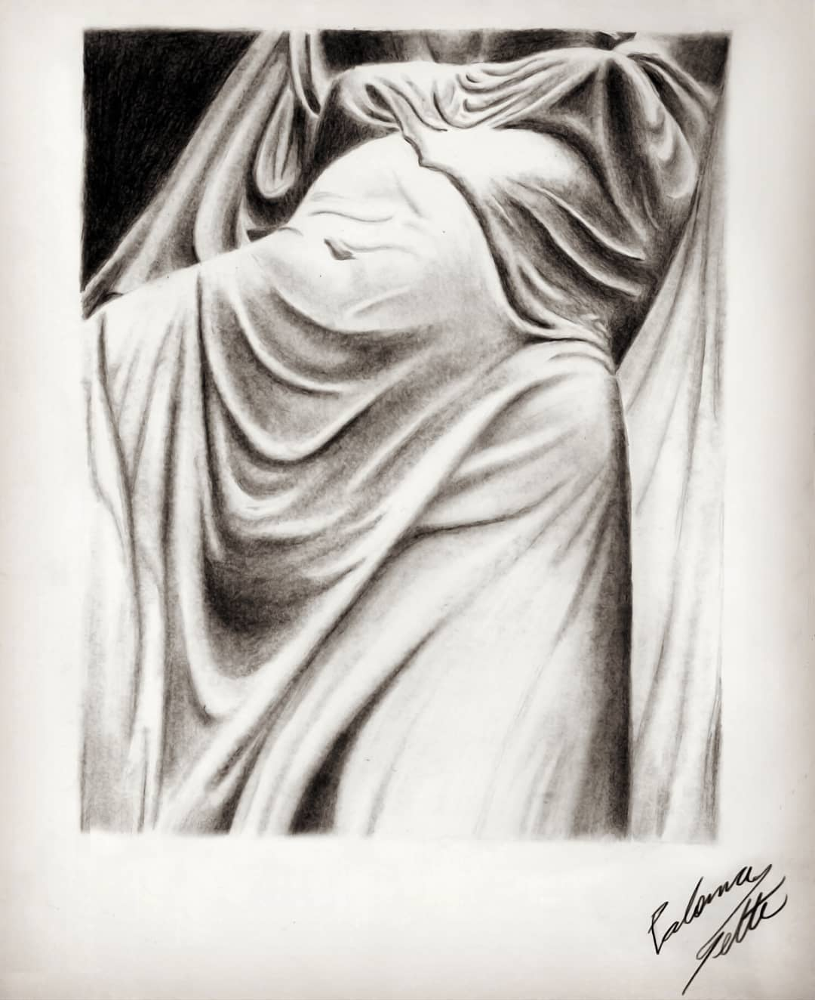
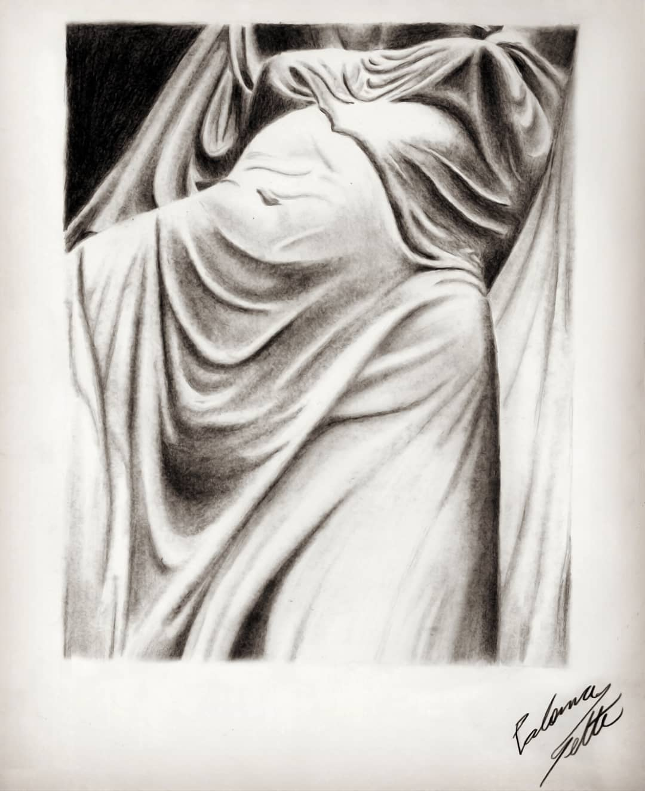

GADemo is an open educational platform designed to provide an intuitive and interactive environment for learning and experimenting with Genetic Algorithms (GAs). Created with accessibility and clarity in mind, the platform allows users to explore GA concepts through visual simulations and guided parameter manipulation — no prior coding experience required.


 
